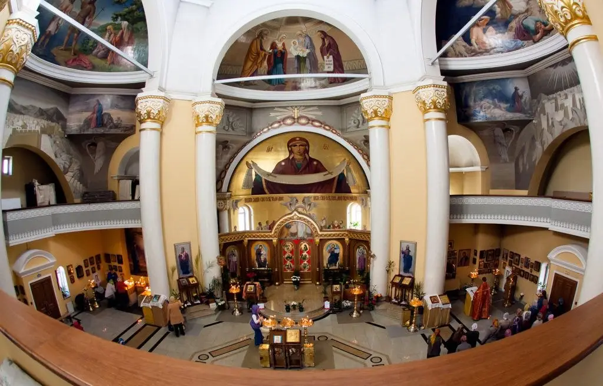
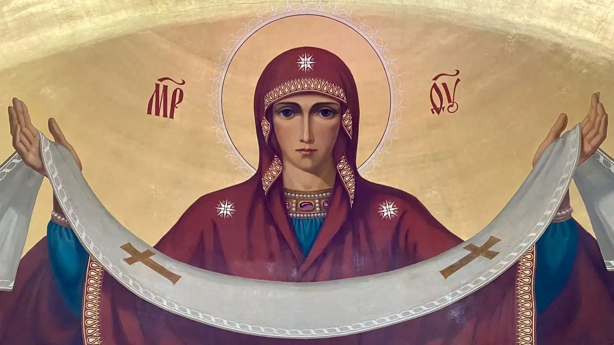
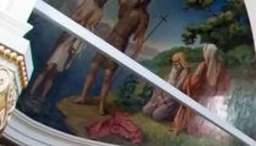
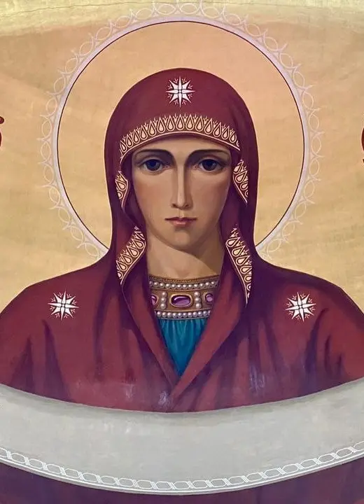
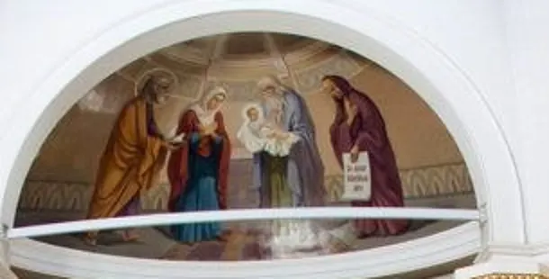
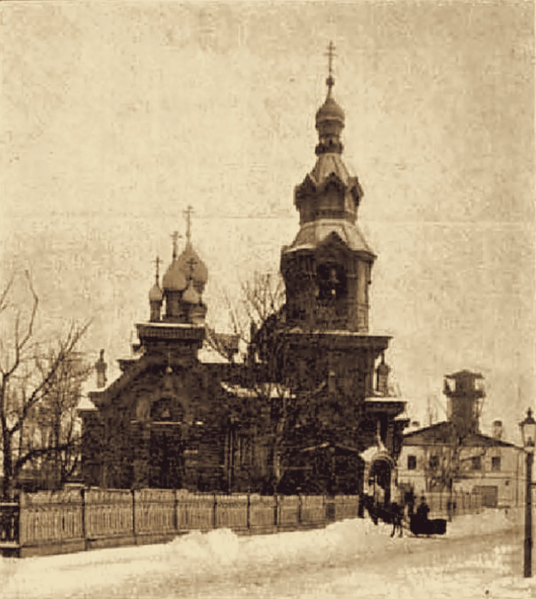

Десять лет со дня великого освящения храма
13 ноября 2016 года митрополит Санкт-Петербургский и Ладожский Варсонофий совершил великое освящение храма Сретения Господня.

Божественная литургия начинается в 10:00, вечернее богослужение — в 16:00. По средам совершается акафист перед иконой Божией Матери «Неупиваемая Чаша», по пятницам — перед иконой «Всецарица».
Неделя показана как пример оформления. Действующее расписание и время акафистов [уточнить]
Записки о здравии и о упокоении подают в церковной лавке храма. Имена в записке пишут в родительном падеже и в церковном написании.
Пожертвования за записки и возможность подачи через сайт [уточнить]
О крещении, венчании, отпевании и других требах договариваются заранее в церковной лавке храма.
Перед Крещением проводятся огласительные беседы — по воскресеньям в 15:00. День Крещения согласуют в церковной лавке.
О дне венчания договариваются в церковной лавке. Порядок подготовки [уточнить]
Об отпевании и панихиде договариваются в церковной лавке. Порядок и время [уточнить]
Исповедь — с 9:30 перед литургией и после вечернего богослужения, около 17:40. Детей к Причастию приносят и приводят к 10:45–11:00.
Почётный настоятель храма. Проповеди в видеозаписи.
Настоятель храма. Проповеди в видеозаписи.
Названия и даты проповедей приведены как пример оформления.
Книги и статьи настоятеля храма, священника Димитрия Лушникова.
Перечень изданий и обложки [уточнить]
Храм расписан в 2009–2016 годах мастерской художника Георгия Шереметьева. В конхе алтаря — Покров Пресвятой Богородицы, над ним, в полукуполе, — Сретение Господне.



Заведующий кафедрой богословия Санкт-Петербургской духовной академии. С 2003 года вместе с протоиереем Георгием Поляковым руководил строительством храма.
Краткая биография, учёная степень и звание [уточнить]
Духовенство храма
13 ноября 2016 года митрополит Санкт-Петербургский и Ладожский Варсонофий совершил великое освящение храма Сретения Господня.
По средам акафист читается перед иконой Божией Матери «Неупиваемая Чаша», по пятницам — перед иконой «Всецарица».
Воскресная школа при храме работает с 2016 года. Расписание занятий [уточнить]
Новости показаны как пример оформления.
Фотографии богослужений, праздников и жизни прихода.
Приход ведёт свою историю от деревянной Сретенской церкви в Полюстрове, освящённой в 1887 году. Нынешний храм на Гражданском проспекте освящён в 2016 году.

Освящена деревянная церковь Сретения Господня, построенная по проекту архитектора В. И. Карпова на средства купца Дорогина. Вскоре к ней пристроили северный придел.
Церковь закрыта, позднее её здание снесено.
Приход возрождён. Богослужения начались во временном храме во имя великомученика Димитрия Солунского, устроенном в помещении торгового центра.
Заложен новый храм. Проект архитектора Георгия Васильева (1937–1998); после его кончины работу завершил Г. К. Челбогашев.
Строительство возглавили протоиерей Георгий Поляков и Димитрий Лушников, ныне настоятель храма.
Первое богослужение в новом храме — на Рождество Христово. Начата роспись храма.
Великое освящение храма совершил митрополит Санкт-Петербургский и Ладожский Варсонофий.
Храм построен на пожертвования, и на них же держится его жизнь.
В стенах храма — кирпичи с именами тех, кто помогал его строить.
Приход собирает средства на второй этап строительства: храм во имя святых благоверных Петра и Февронии и конференц-зал.
Банковские реквизиты и способы перевода [уточнить]